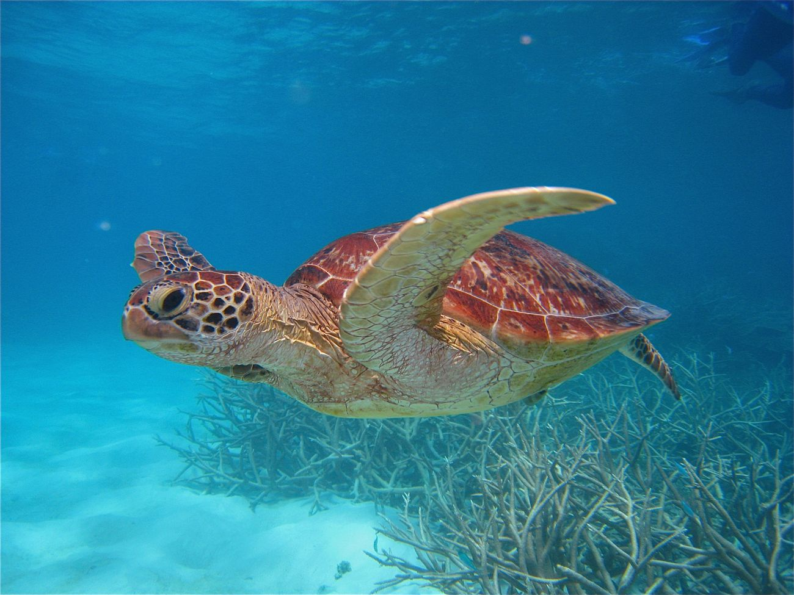
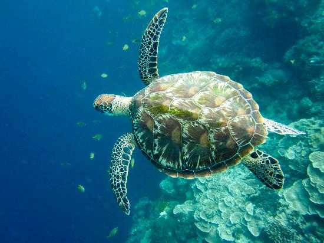

Green Turtle
As the only species in the genus Chelonia, the Green Turtle is a rare icon of the Great Barrier Reef.

Kingdom
Animalia
Phylum
Chordata
Class
Reptilia
Order
Testudines
Family
Cheloniidae
Genus
Chelonia
Description
The Green Turtle's common name does not relate to the colour of its shell, rather the green fat found beneath its carapace. In the wild, they can be distinguished from the Hawksbill by their rounded snouts.
Habitat and Diet
Residing primarily in the Atlantic and Pacific Oceans, the Green Turtle is a famous Reef local. Up to 60,000 female green turtles congregate on the tiny Raine Island each nesting season.
A Green Turtle's palate progresses through their life cycle, moving from carnivore to omnivore. This gradual shift has impacted the turtle's skull morphology, developing serrated jaws for chewing algae and seagrass. By the time they mature into adults Green Turtles are mostly herbivorous, causing the green pigmentation they are renowned for.
Intelligence
Green Turtles travel enormous distances and are excellent navigators, using sunlight and temperature to determine direction. These unique turtles have brains that work like magnetic compasses, sensing the Earth’s magnetic field and using it to return to old nesting and foraging grounds from thousands of kilometres away.
Green turtle facts
1.
The oldest known sea turtle fossil is at least 120 million years old, making sea turtles some of the oldest creatures on the planet.2.
Female marine turtles return to the same nesting grounds where they were born when it’s time for them to lay their own eggs.3.
Leatherback turtles travel 16,000 km or more to dine out on their favourite jellyfish.4.
Turtle hatchlings are super cute but only around one in every thousand will survive to make it to adulthood.5.
The leatherback turtle is the largest of all living turtles and can grow to weigh as much as 900 kg.6.
Male sea turtles spend almost their whole life at sea because, unlike females, they don’t have to return to land to nest.7.
Turtles do cry, but not because they’re sad. They have glands that help to empty excess salt from their eyes, which makes it look like they’re crying.8.
They live to around 100 years, which is also roughly the number of eggs female turtles lay when they nest.Behaviour and Reproduction
Adult males can breed every year, but females migrate from their foraging areas to nest every 2 to 5 years. Female Green Turtles lay about 100 eggs per nest and will nest every two weeks over several months before leaving the nesting area and returning to their foraging grounds.
Threats
Green turtles are particularly at risk of population declines as they are vulnerable to anthropogenic impacts during all life-stages: from eggs to adults. Many turtles also die after being caught in fishing nets or mistaking harmful plastic for tasty jellyfish. As temperatures increase and sea levels rise, critical nesting sites are also flooding, drowning hatchlings before they even reach the surface.